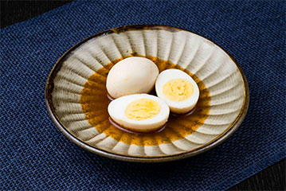
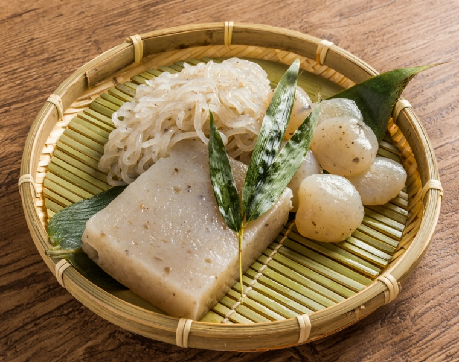
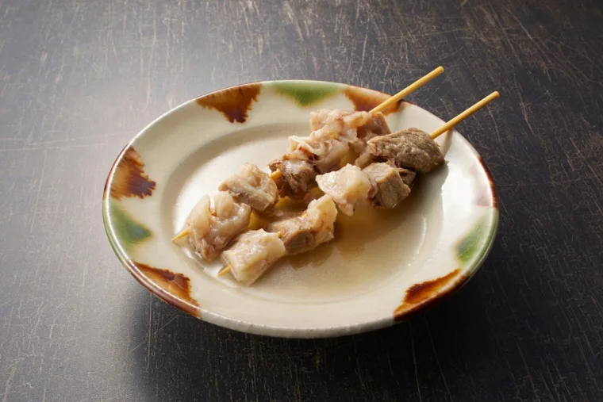

จัดเป็นนาเบะประเภทหนึ่ง ที่นำวัตถุดิบ หลากหลายชนิด ไปต้มเป็นเวลานาน ในน้ำซุป ที่ทำจากปลาแห้งและสาหร่ายคอมบุ จัดเป็นนาเบะประเภทหนึ่ง ที่นำวัตถุดิบ หลากหลายชนิด ไปต้มเป็นเวลานาน ในน้ำซุปที่ทำจากปลาแห้งและสาหร่ายคอมบุ จนรสชาติซึมเข้าไปในวัตถุดิบ โอเด้งคืออาหาร ประจำฤดูหนาว มีขายอยู่ทั่วไปทั้งในร้านสะดวกซื้อ ร้านค้า และร้านแผงลอย โดยมักพบในรูปแบบเสียบไม้
ดูเพิ่ม